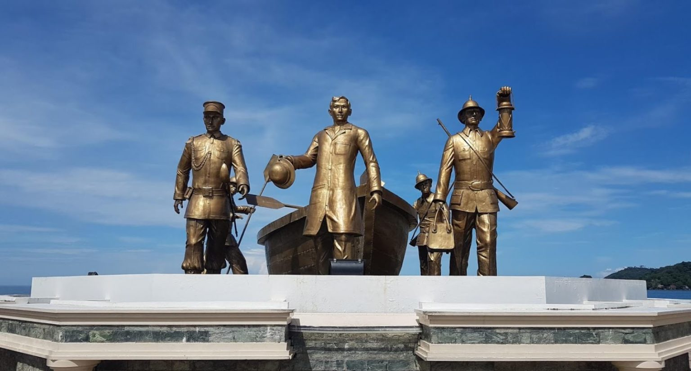
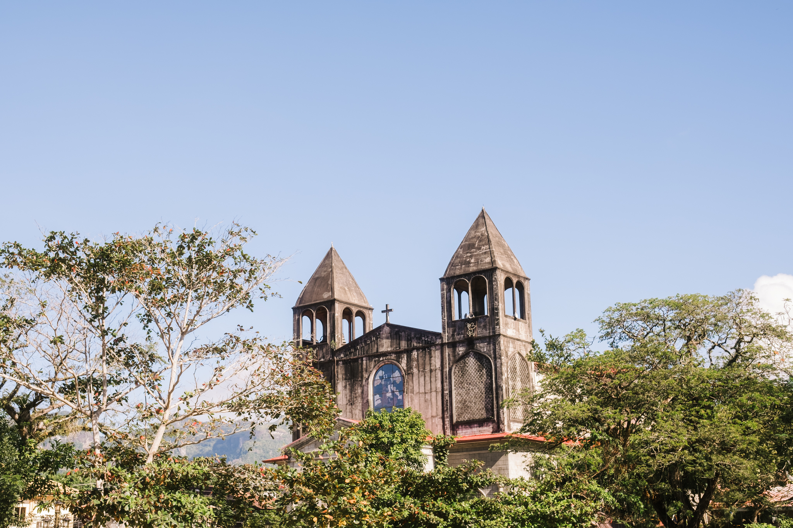
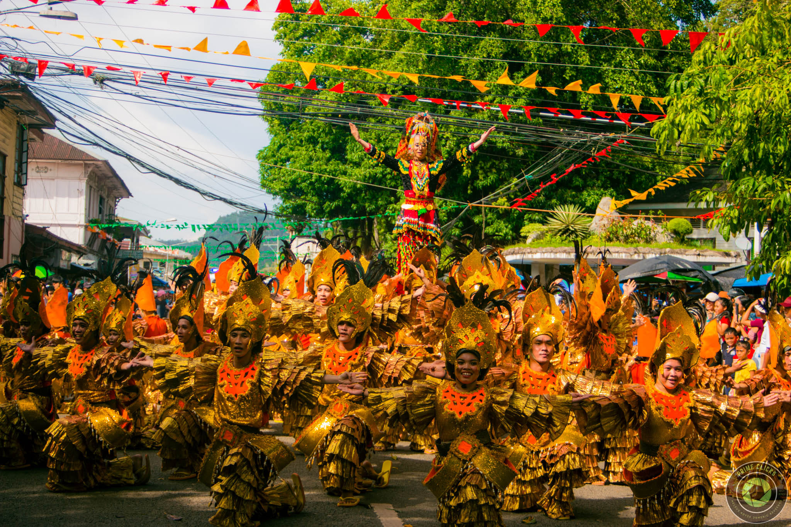
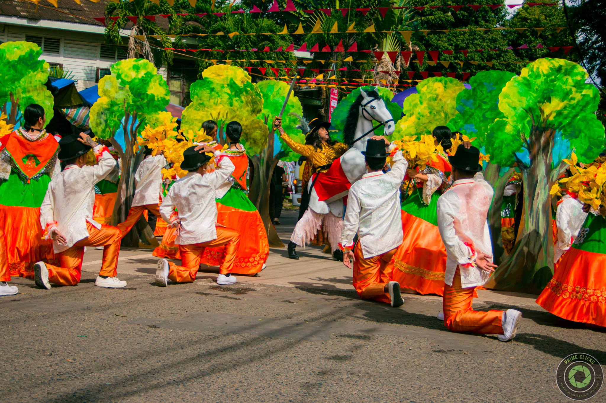
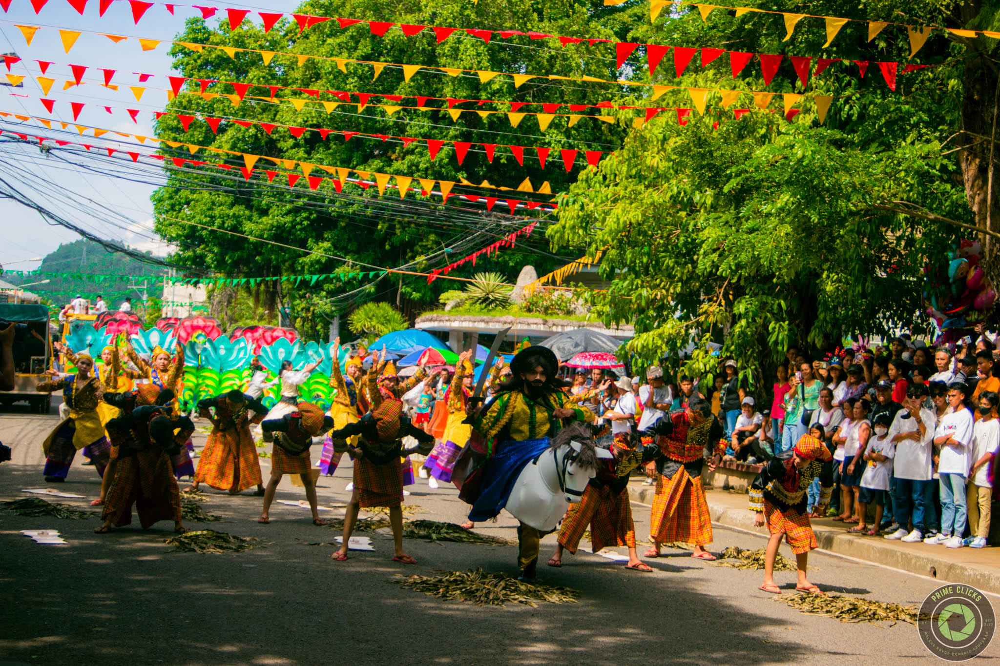
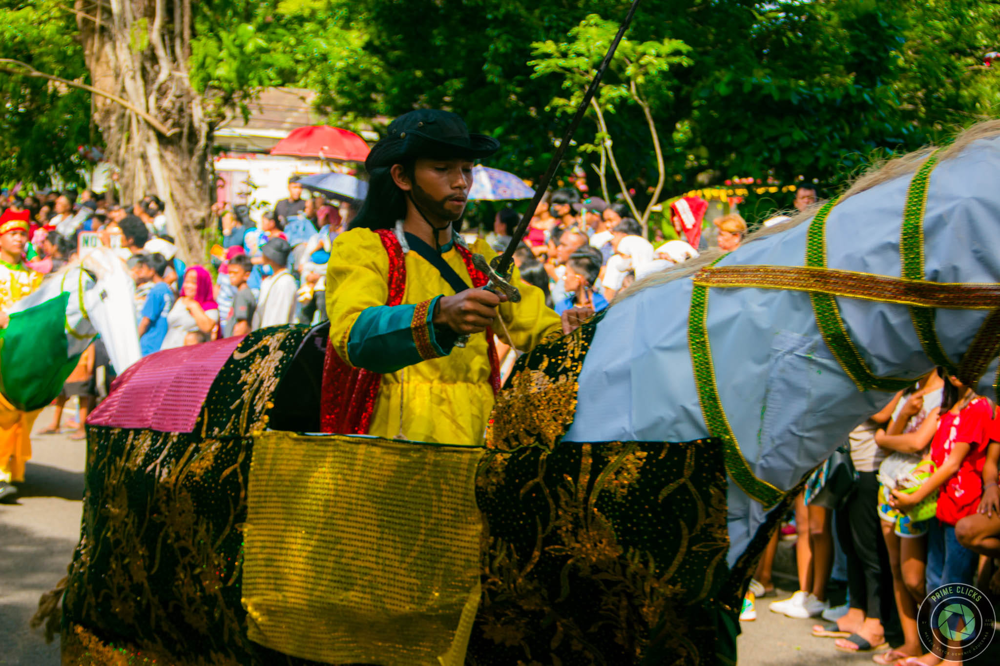

Top Attraction in Dapitan
Rial shrine
The Rizal Shrine in Dapitan is a must-visit landmark in the City. It is a two-story house where the national hero Jose Rizal lived in exile during the Hispanic colonization. The house was built using bamboo and other indigenous materials, and it features a small garden where Rizal grew plants and trees. Today, the Rizal Shrine is a museum showcasing Rizal’s life and works.
Rizal's Landing place
This is the place where Rizal, a national hero of the Philippines, landed. Since there is only few touristic site in Dipolog, this is a major tourist attraction. Although I don’t know about the history of the country, I found this place is very beautiful. It is a good spot to take a picture.
Gloria's Fantasylang
It was my first time visiting fantasyland with my family. Lines on the rides were so bad, just a short wait. Watch the stage performance and fireworks display, I was impressed with how nice their costumes were and how well-rehearsed the stage show was. Everyone did great!
Dakak Park and Beach resort
Discover Dakak Resort and Properties, a hidden gem in Dapitan, Zamboanga del Norte where greenery meets sand and sea. As one of the largest resorts in the southern region, we offer plenty of activities and dining options.
Dapitan City Plaza
The Dapitan City Plaza is like many another except for a feature added by Dr. Jose Rizal himself - the Mindanao relief map he created in the corner closest to St. James .church.
ST James the Greater Church
It was my first time visiting fantasyland with my family. Lines on the rides were so bad, just a short wait. Watch the stage performance and fireworks display, I was impressed with how nice their costumes were and how well-rehearsed the stage show was. Everyone did great!
Llhilhan Hill
Climbing the steps is a challenge for people like me who don't exercise. One can view different parts of the city on different parts of the hill. I prefer the side facing the mountains & the "punongs".
HISTORY OF DAPITAN
While the Rizal Shrine is continuously attracting both domestic and foreign tourist, the City is an attraction by itself. Concrete and well paved roads, stretching to the coastal barangays in the north and towards the interior barangays have turned it into a showcase of beauty and cleanliness. The Dapitan Bay with its expanse of clean beaches is also a constant attraction to tourists.
DAPITAN BEGINNINGS
Dapitan traces its beginnings long before the Spanish conquistadores set foot on the island of Mindanao. Its earliest settlers were the Subanens, a nomadic tribe of Indonesian stock known to have settled and lived along the banks of the river or “suba” out of which their present day tribal identify originated. Fear of pirates taking shelter during foul weather in the natural harbors of Dapitan’s irregular coastlines forced the timid Subanens to move further into the hinterlands. Early cartographers of the Philippines showed Dapitan’s location in their maps of Mindanao in varying names in which they had known it such as: “Dapito” in Kaerius’ map of 1598, “Dapite” in Dudley’s map of 1646, “Dapyto” in Sanson’s map of 1652, and “Dapitan” in Moll’s map of East Indies 1729 and in Murillo Velarde’s map of 1734. There are two versions of how Dapitan got its name. One is from Fr. Urdaneta, who called the place “Daquepitan” which was later changed to “Dacpitan” and still later to “Dapitan” because of the difficulty in pronouncing the former. The second version is derived from the word “Dapit” which means “to invite” in the local Cebuano dialect. This refers to the original group of Boholanos from Panglao, Bohol who were invited by Datu Pagbuaya, the acknowleged founder of the city, to go with him to the “Dakung Yuta”, that is Mindanao, and the settlement they established was called Dapitan. This is the traditional version of how Dapitan got its name. In various historical reports, there are authentic accounts of trading voyages in the early periods and it is hinted that commercial relations may have been established with Dapitan, already a thriving settlement. It is probable that interaction occurred with the traders and there may have been a mingling of culture. In addition, the divergent cultures brought by the European invaders, the Americans, the Japanese and the different Visayan groups of settlers in Dapitan which caused the emergence of a distinct culture the present crop of Dapitanons have.
THE TRANSITION FROM SPANISH SETTLEMENT TO TOWNSHIP
Dapitan was already a thriving settlement when Miguel Lopez de Legaspi arrived in 1595. It is believed that with Legaspi in the expedition were some Agustinian friars who converted the natives to Christianity. Foremost of the converts were Pedro Manooc, son of Pagbuaya, and Manooc’s daughter, Maria Uray. Even long before the Jesuits were expelled from the Philippines in 1768, they had already established mission stations in Zamboanga, Dapitan, Iligan and Butuan. Outside of these strategic beachheads, however, the whole Mindanao hinterlands remained untouched by the Cross. The permanent Dapitan mission was founded in 1629 headed by a Jesuit missionary, Father Pedro Gutierrez. It was only after the establishment of the Jesuit mission that a strong and stable form of government was finally erected. The Spanish authorities adopted the local form of government that was already existing but placed the officials under the absolute control of the Spanish government. The settlement came to be known as the “pueblo”, and its head variously called either “Datu”, “Capitan” or “Cabeza de Barangay”. The politico-military commandancia of Dapitan until the end of the Spanish domination in 1898 was still dependent on Misamis. It was only during the revolutionary period that Dapitan became an integral part of the Filipino forces in Zamboanga. During the American occupation, Dapitan continued to be a part of Zamboanga, one of the two districts comprising the Provincia Mora. Dapitan remained a part of Zamboanga province until 1952 when it was divided into two provinces, Zamboanga del Norte and Zamboanga del Sur. The first election for the Provincial Governor of Zamboanga took place in 1922. Atty. Florentino Saguin, a Dapitanon, won over two opponents who were leading citizens and political veterans of Zamboanga City. In the second regular election in 1925, another Dapitanon, Don Jose Aseniero, was elected governor of the province.
FROM A SMALL TOWN TO A HISTORICAL CITY
From a small town replete with history, Dapitan took a giant step forward and became a chartered city by virtue of Republic Act No. 3811 which was signed by then President Diosdado Macapagal on 22 June 1963, thus becoming the first city in the Province of Zamboanga del Norte. It is officially known as the “Shrine City of the Philippines”. It is one of the four cities of Region IX (Map 1) these are Zamboanga City, Pagadian City, and Dipolog City. Today, it is at the threshold of finding its rightful place in the global village. Here lies the greatest potential of the City with respect to the Region and the regional economy. Its value in the tourism industry cannot be overstated and with proper support from the national leadership, this potential can still prove to be the triggering device towards development.

Kinabayo Festival
Kinabayo festival is an amazing event on Dapitan City’s social calendar. The event is held every year, with tourists thronging to this location. While Dapitan City is best known for its amazing history as home to the location where national hero and symbol of struggle, Dr. Jose Rizal was exiled, it is also home to amazing festivals such as Kinabayo. Dapitan is one of the few predominantly Catholic cities in the Mindanao region of the Philippines, and every year, almost 95% of the 75,000 residents of the city take part in a mix of traditional and exotic celebrations for the Kinabayo Festival.
History of Kinabayo Festival
Kinabayo Festival Kinabayo festival is an amazing event on Dapitan City’s social calendar. The event is held every year, with tourists thronging to this location. While Dapitan City is best known for its amazing history as home to the location where national hero and symbol of struggle, Dr. Jose Rizal was exiled, it is also home to amazing festivals such as Kinabayo. Dapitan is one of the few predominantly Catholic cities in the Mindanao region of the Philippines, and every year, almost 95% of the 75,000 residents of the city take part in a mix of traditional and exotic celebrations for the Kinabayo Festival. History of the Kinabayo Festival in Dapitan Kinabayo festival is held to celebrate the Patron Saint, St. James the Greater. At the core of the festival is the reenactment of the Spanish-Moorish wars, the Battle of Clavijo, previously known as the Battle of Covadonga in 722 AD. During this war, St. James the Great (also known as Senor Santiago in Dapitan) was said to show an apparition riding a horse and holding a sword. He was leading the Spanish to victory against the Moors. This story was adapted in Dapitan, which used to be overrun with Moorish pirates. When the Spanish Jesuit missionaries arrived, they sought the help of St. James the Greater to defeat the Moors. The Christian defenders were victorious against the Moorish pirates. Since then, the Dapitanos have always re-enacted the Battle of Covadonga in honor of the intervention of St. James the Greater that also freed the city. The Kinabayo Festival is also considered a feast in honor of St. James the Greater, thus the local chant of “Viva Senor Santiago!” throughout the festival.
The Month-long Celebrations of Kinabayo Festival
If there’s one thing about Filipinos, they know how to party. The Kinabayo Festival is so celebrated that the city spends a whole month staging programs and activities in honor of their patron saint.
Morning prayers
Most Philippine festivals begin with a celebratory mass. At the Kinabayo Festival, however, every afternoon of every day from the beginning of the festival is filled with prayers. At 5:00 PM, the community prays the rosary, followed by a 30-minute novena. The Holy Mass is held at 6:00 PM. On the 25th of July, the official feast day of Senor Santiago, a Holy Mass is held every hour from 4:00 AM. The Pontifical Mass is held on the same day at 10:00 AM.
The Fluvial Parade
A new addition to the celebration that began in 2018, the Fluvial Parade symbolizes Senor Santiago’s journey around the world to spread the Word. He was martyred in Jerusalem and his remains were sent back to Compostela in a boat. The Fluvial Parade happens on July 24 and starts from Dipolog City. Locals send off the boat to Dapitan to the beat of drums. As the parade nears Dapitan, Dapitanos cheer and chant to welcome Senor Santiago to their shores.
This festive welcome is called “Patunob”. Devotees welcome their patron saint while waving “parpagayo” or San Franciscan leaves. The Dapitanos then parade the statue of Senor Santiago to church and continues with the Sinug and Loa, the storytelling of the saint’s life and works. This is a parade of dancing with locals dressed in colorful outfits.
The Parade of Horses and the Re-Enactment of the Spanish-Moorish War
On July 25, a group of horsemen head the parade, followed by contingents of the street dance competition. Different groups from Dapitan perform on the streets, each one with a muse holding a statue of their beloved saint. The performers are dressed to represent either the Christian troop or the Moorish soldiers. Each one is riding “horses” made of bamboo and rattan, thus the term “kinabayo” (kabayo is the Filipino word for horse). Each group re-enacts the fight between the Christian saviors and the Moorish pirates. An actor dressed as St. James the Greater arrives on a white horse, brandishing a sword and defeating the enemy. This is then followed by a bellowing chant of “Viva Senor Santiago!”
Contact Us

If you need some help just contact this: